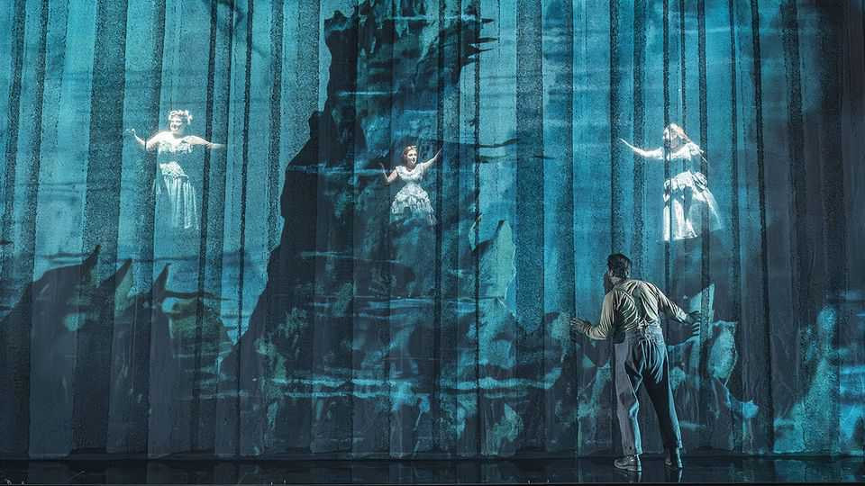
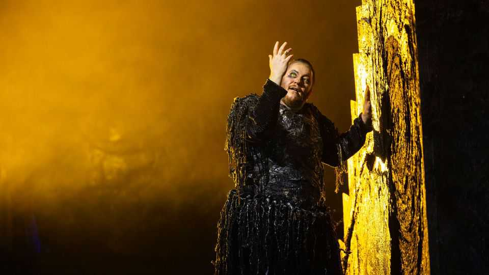
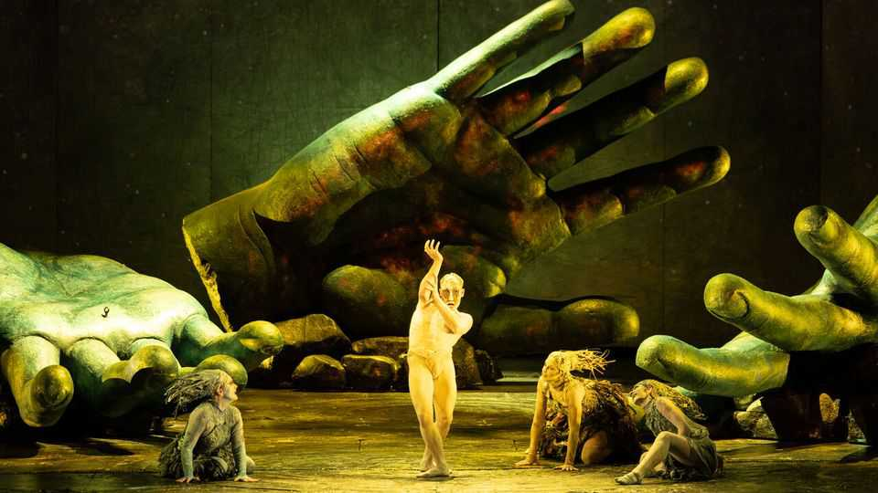
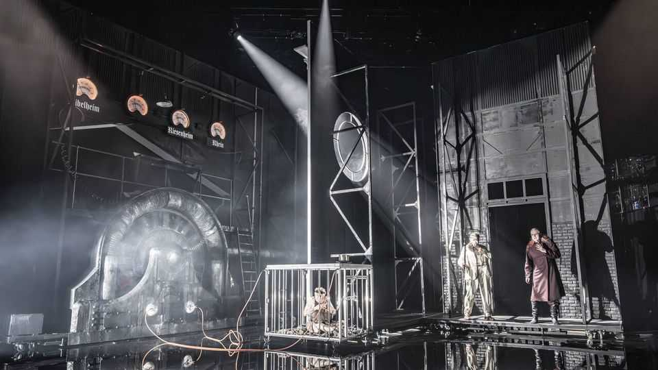

Why you should sit through 15 hours of opera
At 150 years old, Richard Wagner’s “Ring” cycle still commands attention

Aug 6th 2026
KAISER WILHELM I was there. So was Ludwig II of Bavaria, who had footed much of the bill. Dom Pedro II of Brazil had sailed over. Friedrich Nietzsche, a philosopher, was also present—though he pretended he hadn’t been. Bayreuth was a Bavarian backwater, but 150 years ago it seemed like the centre of the world. The “Ring of the Nibelung” (known as the “Ring” cycle), which Richard Wagner had composed and written over 26 years, had its first complete performance in August 1876 in the opera house that he had built to present the monumental work.
In his influence, audacity and divisiveness, Wagner was art’s analogue of Elon Musk. His ideas “overran intellectual discourse for several generations”, writes Alex Ross in “Wagnerism”. His works remain lodged in Western culture’s subconscious, revealing both the human condition and the age that encounters them. That is especially true of the “Ring”, the most magnum of Wagner’s opuses. If you’ve read or watched “The Lord of the Rings”, you’ve fallen under its spell at second hand. If you experience it you may find yourself obsessing the way Wagner’s contemporaries did.
Though royalty attended its birth, the “Ring” is a child of revolution. In 1849, a year of European insurgency, Wagner was doing his bit to dethrone the king of Saxony by reporting troop movements. He fled to Zurich soon after starting work on the “Ring” cycle. His starting point was Germanic and Scandinavian legends written down in the 13th century, in particular the “Nibelungenlied”, the Icelandic Eddas and the Volsunga saga. This was natural source material for a revolutionary who wanted Germany’s patchwork of principalities to become a nation state.

From this Wagner fashioned a tale of gods, heroes, dwarves and giants that stretches out over four “music dramas”—15 hours of opera in all. It begins when Alberich, a Nibelung (dwarf), spurned by the Rhine maidens, renounces love in order to seize their gold. He forges a ring that gives him world-ruling power. When Wotan, the chief god, wrests the ring from him, Alberich curses anyone who possesses it. The thefts and the curse bring about the downfall of the gods in “Götterdämmerung” (“Twilight of the Gods”), the final opera.
Wagner’s effect on audiences has often been likened to that of mind-altering substances. Nietzsche compared it to the “continual consumption of alcohol”; Charles Baudelaire, a poet, to “the vertiginous imaginings of opium”. For most Wagnerians the gateway drug is music. “Das Rheingold” (“The Rhinegold”), the opening chapter, begins primordially, with a rumbling E-flat from double basses that seems to portend all that ensues. Soon the music depicts the undulating Rhine, one of more than 100 leitmotifs—earworms that recur and evolve throughout the cycle, announcing, recalling and commenting on characters, ideas and things. Figures express themselves not in the set-piece arias of conventional opera but in uninterrupted “infinite melody”.

The characters, mythic but complex, are a second inebriant. Wotan, a trammelled divinity, disguises himself as “the Wanderer”; Brünnhilde, his daughter, defies his law in the name of love; Siegfried, the dragon-slaying hero, turns out to be not such a hero. A work about abstractions like love and power is crammed with artefacts that might appear in a video game—and indeed have done. The Tarnhelm, a helmet that allows its wearer to shape-shift, pops up in “Diablo II”.
Drunk on ideas, Wagner intoxicates audiences with them, too. “All the currents of philosophical thinking that were important in his day…left traces in his dramas,” wrote Roger Scruton, himself a philosopher. Wagner wrote the text, and some of the music, under the influence of Ludwig Feuerbach, an atheist who thought love could liberate mankind.
Disillusioned by the failure of revolution, Wagner turned to the famously bleak Arthur Schopenhauer, who believed in resignation. The one thing Schopenhauer was optimistic about was music, which he thought revealed “the innermost nature of the world”. Under his influence, Wagner discarded the “Feuerbachian” ending of “Götterdämmerung”, in which Brünnhilde proclaimed a world “without rulers”. She immolates herself and the gods to the accompaniment of four minutes of nearly wordless music. After the curtain falls, you could spend another 15 hours discussing what it all means.
In part for that reason, Wagner, more than any other composer, has influenced arts beyond music. Owen Wister, pioneer of the cowboy novel, was a besotted Wagnerian. James Joyce returned to certain images and words in “Ulysses”; so too did Virginia Woolf in “Mrs Dalloway”. Leitmotifs influenced film scores: think of “As Time Goes By” in “Casablanca” or the character themes in “Star Wars”.
The idea of the Gesamtkunstwerk, or total work of art, is another bequest of the “Ring”: an expression of Wagner’s yearning to unite poetry, music and spectacle in a way that recalls the staging of tragedies in ancient Greece. His festival house in Bayreuth conceals the orchestra and fixes the audience’s attention on the stage, prefiguring cinema. Among the thinkers enthralled by the “Ring” was W.E.B. Du Bois, a black American sociologist. For him it “retold for mankind the suffering and triumphs and defeats of a people”.

Anti-Wagnerians, just as passionate, were sickened by the narcotic. Nietzsche, who never fully freed himself from his addiction, heard in the music “the complete degeneration of rhythmic feeling”, the opposite of the vitality he prized. He recoiled from Wagner’s antisemitism, which later helped endear the composer to the Nazis and alienate some music-lovers.
The number of Wagnerians is shrinking. Membership of the International Association of Wagner Societies has declined by more than half since 2003, to 15,000. Yet the “Ring” is becoming more popular. The number of performances of the operas that make it up increased by 44% between 2000-06 and 2020-26, according to Operabase, a listings platform.
Perhaps that is because the sense that something is amiss with civilisation is even stronger than usual. Despite the Nazis’ imprimatur, the “Ring” reads more as a dream of the left than a fascist fantasy. Much as Wagner rejected kings, he reviled industrial capitalism, making him a rebel against modernity as well as its herald. Alberich exploits the Nibelungen who mine his gold. The cycle ends with a vision of a post-divine world governed by love rather than law and lucre.
For conservatives like Scruton, the revolution is to occur not on the streets, but in people’s souls. The “Ring” presents “a vision in which art takes the place of religion in expressing and fulfilling our deepest spiritual longings”, he wrote.
Adding to its power is the paradox that the “Ring” is malleable in the hands of the auteurs who stage it. Wieland Wagner, the composer’s grandson, set a precedent by staging highly abstract productions in Bayreuth that purged the works of their associations with German nationalism.
Environmental plunder, inseparable from the renunciation of love, notes Mark Berry, an academic, has been a theme of stagings since the 1970s. In a production at the Grange Park Opera near London, Earth’s magnetic field is the “gold” that becomes electricity, which powers the social media that cut human beings off from one another. Imagery in the anniversary production in Bayreuth is generated by AI (the audience has booed).
Revolutionary or royalist, Wagner was no liberal, and so did not see that modernity could self-correct even as it spawned new faults. But as long as humans fail to achieve their unattainable ideals, the “Ring” will resound. ■